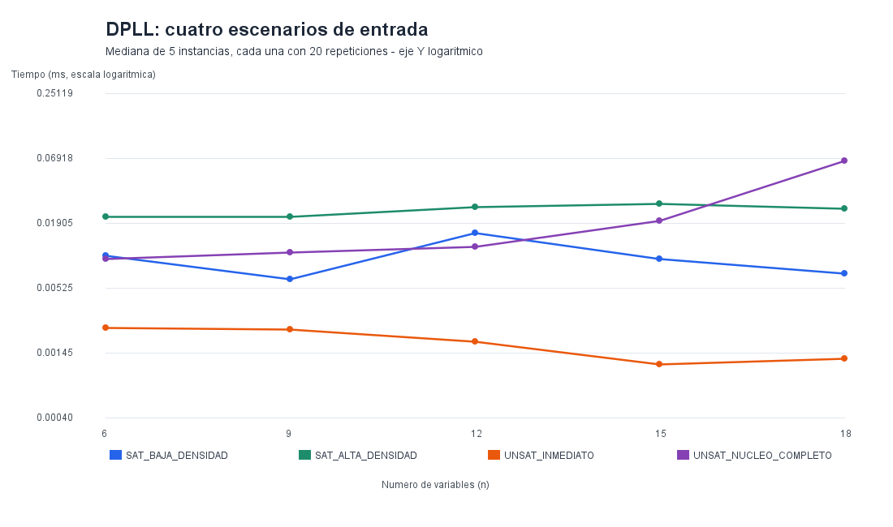
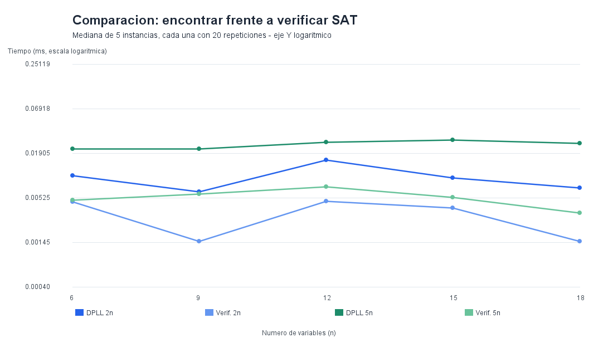

Fórmula satisfacible
(x1 | !x2) & (x2 | x3)
Existe al menos una asignación válida.
Sistema de validación de restricciones lógicas
Ingresa una fórmula booleana en forma normal conjuntiva (CNF). El sistema determinará si existe una asignación que satisfaga todas las cláusulas.
Usa | para OR, & para AND y ! para NOT.
Ingresa una fórmula y pulsa Resolver.
Se muestran todas las asignaciones posibles y cuáles satisfacen las cláusulas de la fórmula.
Ingresa una fórmula CNF y una asignación propuesta. El verificador comprobará si satisface todas las cláusulas.
Escribe todas las variables usando true o false, separadas por comas.
Aquí aparecerá la verificación.
Explora fórmulas predeterminadas y comprueba cómo responde el algoritmo SAT.
(x1 | !x2) & (x2 | x3)
Existe al menos una asignación válida.
(x1) & (!x1)
Contiene condiciones contradictorias.
Selecciona un ejemplo para ejecutarlo.
Resultados experimentales del algoritmo DPLL y del verificador SAT, obtenidos mediante pruebas automatizadas en Java.
DPLL explora asignaciones para determinar si una fórmula CNF es satisfacible.
Comprueba si una asignación dada satisface todas las cláusulas.
Se evaluaron 100 fórmulas CNF, distribuidas en 5 tamaños de entrada y 4 escenarios diferentes.
Cada instancia se ejecutó 20 veces, después de 10 ejecuciones de calentamiento. Los resultados representan medianas.
Escenarios: SAT de baja densidad, SAT de alta densidad, UNSAT inmediato y UNSAT con núcleo completo.

Se observa que la dificultad de una fórmula depende de su estructura, no solamente del número de variables.

En las instancias evaluadas, verificar una asignación SAT fue generalmente más rápido que encontrarla con DPLL.
Tiempo mediano de DPLL (milisegundos).
| n | SAT 2n | SAT 5n | UNSAT rápido | UNSAT núcleo |
|---|---|---|---|---|
| 6 | 0.01000 | 0.02165 | 0.00240 | 0.00945 |
| 9 | 0.00630 | 0.02175 | 0.00230 | 0.01075 |
| 12 | 0.01580 | 0.02620 | 0.00180 | 0.01190 |
| 15 | 0.00935 | 0.02815 | 0.00115 | 0.02000 |
| 18 | 0.00700 | 0.02560 | 0.00130 | 0.06620 |
Para 18 variables, DPLL asignó una mediana de 4.280 bytes en SAT de baja densidad, 7.768 bytes en SAT de alta densidad, 1.960 bytes en UNSAT inmediato y 12.376 bytes en UNSAT con núcleo completo.
Estas cifras corresponden a bytes asignados por hilo, no al pico de memoria RAM.
El escenario UNSAT inmediato presentó tiempos bajos gracias a la detección temprana de contradicciones.
El núcleo completo requirió mayor trabajo de búsqueda. Para 18 variables, fue aproximadamente 50,9 veces más lento que UNSAT inmediato.
Los resultados ilustran el comportamiento de estas instancias, pero no demuestran por sí solos el peor caso exponencial general del algoritmo.
SAT SOLVER permite analizar fórmulas booleanas en CNF y comprobar asignaciones.
|
OR — Disyunción
&
AND — Conjunción
!
NOT — Negación
( )
Agrupación de cláusulas
(x1 | !x2) & (x2 | x3)
Andrea-Paula-Paola-Valeria-Anthony